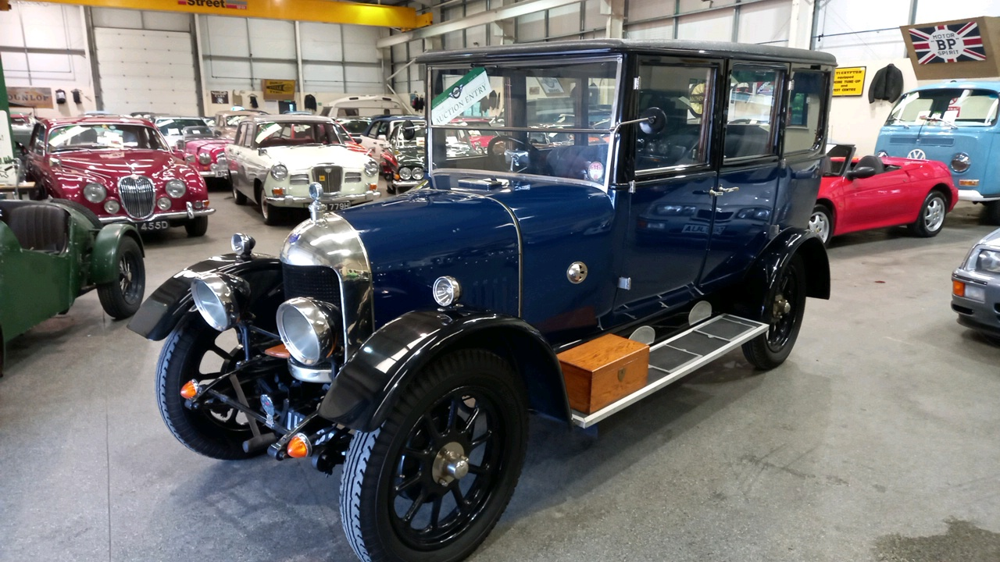
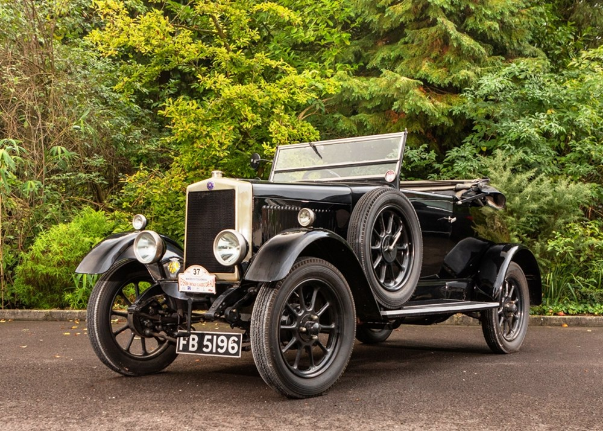

MG Motors
Rencana kehadiran MG Motor Indonesia akhirnya terwujud. Mulai 24 Maret 2020, MG Motor Indonesia akan mulai menawarkan mobil merek MG yaitu. Garasi Morris Inggris. Model pertama adalah MG ZS yang mengisi segmen compact SUV dan bersaing dengan Honda HR-V, Suzuki SX4 S-Cross, Mazda CX-3 dan Kia Seltos
Mari simak sejarah panjang brand MG dari Inggris hingga MG Motor Indonesia:
MG atau Morris Garage adalah merek dagang yang berasal dari WRM Motors Ltd, sebuah perusahaan yang didirikan oleh William Morris pada tahun 1908. Dimulai sebagai produsen sepeda, kemudian beralih menjual, menyewakan dan memperbaiki mobil Morris, dan kemudian menjadi produsen mobil. Produk pertamanya adalah Morris Oxford "Bullnose" 2 tempat duduk, yang diperkenalkan pada tahun 1913. Mobil tersebut dibuat di pabrik menggunakan tanah dan bangunan bekas sekolah militer di Oxford, Inggris. Mengapa hanya membangun mobil 2 tempat duduk? Ternyata platform hidung banteng terlalu pendek untuk membuat mobil 4 tempat duduk. Juga, mesin 1.018cc terlalu kecil untuk menggerakkan 4-seater.
Padahal, masyarakat Inggris kala itu sangat membutuhkan jenis mobil tersebut. Selain Bullnose dua tempat duduk dengan rangka dan mesin yang sama, Morris juga memproduksi model coupe dan van pada tahun 1914. Dengan ketiga model tersebut dan kualitas yang selalu konsisten, Morris berhasil memasarkannya hingga kebanjiran pesanan. White and Poppe, sebagai pemasok mesin, tidak dapat mengakomodir permintaan Morris untuk meningkatkan produksi mesinnya. Morris pun mendekati Continental of Detroit, Michigan, AS untuk memasok mesin 1.548 cc. Selain mesin, Morris juga memesan transmisi dan gardan dari Amerika Serikat.
Sementara pecahnya Perang Dunia I membuat gelisah hampir setiap pembuat mobil, Morris tidak melakukannya. Sudah pertengahan tahun 1915, mereka berhasil memperkenalkan mobil desain baru yang lebih besar dari "Bullnose", yaitu Morris Cowley 2 dan 4 tempat duduk.
Masalah muncul ketika Continental yang berbasis di Detroit mengumumkan bahwa mereka tidak dapat lagi memasok mesin karena sulitnya menemukan bahan mentah setelah perang. Morris kemudian bekerja menggantikannya di pabrik mobil Prancis Hotchkiss. Hotchkiss memproduksi mesin di dekat pabrik Morris di Coventry, West Midlands, Inggris. Mesin ini kemudian digunakan di Cowley dan mobil produksi Morris lainnya. Sebagai produsen mobil berkualitas dengan harga terjangkau, Morris menguasai 51% pangsa pasar domestik, menjadikan Ford sebagai produsen mobil terbesar di Inggris.
Dengan keuntungan sebesar itu, Morris kemudian membeli bisnis pemasok tersebut agar produksi tidak terganggu. Misalnya, pada tahun 1923 ia membeli pabrik Hotchkiss di Coventry, yang kemudian menjadi anak perusahaan Morris Engines. Ia pun merekrut FG Woollard untuk meningkatkan produksi mesin dari 300 unit per minggu menjadi 1.200 unit. Pada tahun 1924, pabrik tersebut memproduksi 2.000 unit per minggu, dengan hanya sedikit peningkatan ruang kerja dan tenaga kerja.
Sejarah merek MG juga dimulai pada tahun ini. Cecil Kimber, manajer penjualan, persewaan, dan perbaikan produk mobil Morris sejak 1909, mulai membangun mobil versi Morris Sport, dinamai menurut unit yang dikelolanya, Morris Garage, disingkat MG. Permintaan akan produk tersebut sangat besar sehingga William Morris memutuskan untuk membangun pabrik khusus untuk MG di Abingdon, Oxfordshire dengan nama MG Car Company. Namun pada tahun 1935, karena suatu alasan, William Morris menjual MG Car Company ke Morris Motors. Kimber bermasalah dengan ini, jadi William meminta Cecil keluar dari perusahaan pada tahun 1941.
Kimber kemudian bergabung dengan rumah modifikasi Charlesworth sebelum bergabung dengan produsen piston Specialloid. Kimber meninggal dalam kecelakaan di stasiun King's Cross di London pada 4 Februari 1945. Pada tahun 1952 Morris Motors dan Austin Motor Company Limited bergabung untuk membentuk sebuah perusahaan baru bernama British Motor Corporation Limited. M.G Car Company berada di bawah perusahaan baru ini.
| Kelebihan | Kekurangan |
|---|---|
| Memiliki Tampilan yang Luxury dan Dinamis | Baru Punya 14 Outlet Resmi di Seluruh Nusantara |
| Fitur Keselamatan Standar MG Raih Bintang Lima | Harga Cukup Mahal Karena MG HS Didatangkan Secara Utuh Dari Thailand |
| Dibenamkan Mesin 1.5L Turbocharged yang Sangat Bertenaga | |
| Suspensi Terbilang Cukup Nyaman | |
| Punya Fitur Keselamatan ADAS | |
| Bisa Menyalakan Mobil Melalui Smartphone dan Mengecek Status Kendaraan | |
| Mampu Menunjukan Lokasi yang Dituju dengan Mudah Melalui Layar Infotaiment |